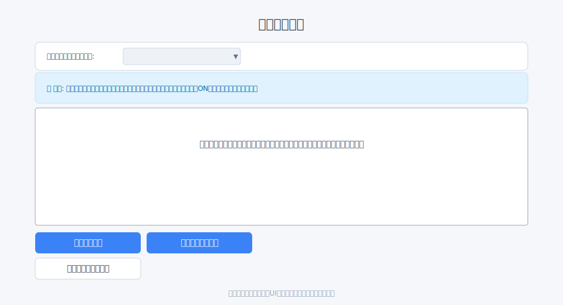
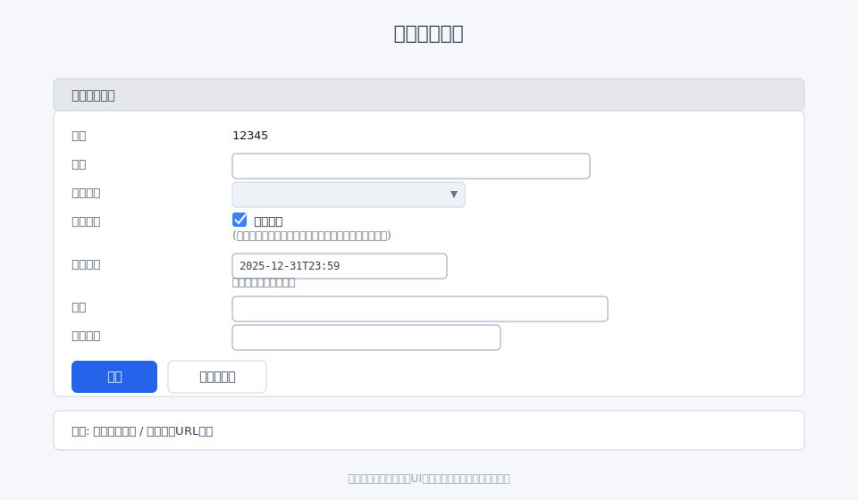
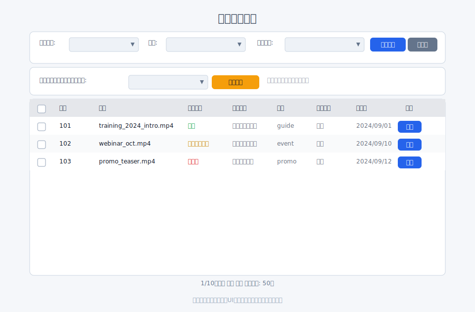

DRM化（コピーガード）
DRMとは
DRM（Digital Rights Management）は、動画コンテンツの不正コピーや無断配布を抑止するための保護技術です。 再生時にライセンス認証を行い、許可された環境でのみ復号して再生します。
Filmaにおける「許可された環境」とは、Filmaの再生ページ・再生API経由で、 有効な認証情報（会員セッションやJWT付きURLなど）を使って再生している状態を指します。
Filmaでは、DRMは「配信時の保護」を目的として利用します。 そのため、ストリーミング再生のみが対象で、ダウンロードファイルは対象外です。
重要: DRM化したファイルは元に戻せません。
画面URL
- ファイル一覧:
/filmaadmin/file - ファイル詳細:
/filmaadmin/file/detail/:file_id - アップロード:
/filmaadmin/file/upload/:folder_id
アップロード時にDRM化する
- アップロード画面でファイルを選択
- 「DRM化する」にチェック
- 「アップロード」を押下
アップロード完了後、DRM付きのエンコードタスクが登録されます。

既存ファイルをDRM化する
- ファイル詳細
/filmaadmin/file/detail/:file_idを開く - 「操作」カードの DRM化する をクリック
- 確認画面で内容を確認し、実行
DRM化対象: - 親メディアファイル - エンコード済みの派生メディア

表示と確認ポイント
- ファイル一覧/詳細の DRM 欄に「DRMあり」バッジが表示されます
- 「メディアファイル情報」の ダウンロード には注意書きが表示されます （DRMはダウンロードに適用されません）
- 「ファイル処理状況」に DRM の進行状況が表示されます

DRM化できないケース
以下の場合はボタンが表示されない、または実行できません:
- すでにDRM化済み
- エンコード処理中
- ファイル処理が失敗している